CODING AGENTS AS PIXEL WORLD MODELS
traex/DeepSeek-V4.1-Flash · 0065
点击播放 · 原生 RGB 像素
逐轮保存的候选
回放视频、检查图与代码变化。
每份候选均可单独播放。实际图片检查记录在下方工具轨迹中。
候选 01播放与检查图
点击播放 · 原生 RGB 像素
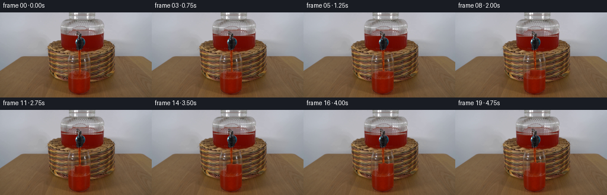
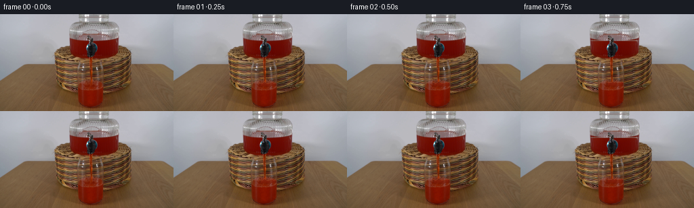
展开代码变化
--- 上一保存版本
+++ 本次保存版本
@@ -0,0 +1,180 @@
+from pathlib import Path
+
+import numpy as np
+from PIL import Image
+
+import artifact_io
+
+
+CASE_DIR = Path(__file__).resolve().parent
+WIDTH, HEIGHT = 256, 144
+FRAMES, FPS = 20, 4
+DURATION = FRAMES / FPS
+
+
+def smoothstep(value):
+ value = np.clip(value, 0.0, 1.0)
+ return value * value * (3.0 - 2.0 * value)
+
+
+def animate_stream(frame, source, surface_y, t):
+ """Move subtle highlights through the existing narrow red stream."""
+ ys, xs = np.mgrid[66:104, 130:139]
+ red = (
+ (source[ys, xs, 0] > 62)
+ & (source[ys, xs, 0] > source[ys, xs, 1] * 1.45)
+ & (source[ys, xs, 0] > source[ys, xs, 2] * 1.45)
+ & (ys < int(np.ceil(surface_y)))
+ )
+
+ flow_phase = 2.0 * np.pi * (ys / 7.2 - t * 2.45)
+ flow = 0.965 + 0.045 * np.sin(flow_phase)
+ values = frame[ys, xs].astype(np.float32)
+ values[red] *= flow[red, None]
+
+ # A loose specular thread and small traveling glints reveal downward motion.
+ highlight_x = 133.35 + 0.55 * np.sin(ys * 0.43 - t * 3.2)
+ glint = red & (np.abs(xs - highlight_x) < 0.72)
+ values[glint] += np.array([8.0, 3.2, 1.6], dtype=np.float32)
+
+ travel = (ys - 17.0 * t) % 15.0
+ sparkle = red & (travel < 1.45) & (np.abs(xs - 134.2) < 1.3)
+ values[sparkle] += np.array([13.0, 5.5, 2.5], dtype=np.float32)
+ frame[ys, xs] = np.clip(values, 0, 255).astype(np.uint8)
+
+
+def liquid_color(y, x, surface, t):
+ depth = np.maximum(y - surface, 0.0)
+ near_surface = np.exp(-depth / 3.4)
+ texture = (
+ np.sin(x * 0.69 + y * 0.24 + t * 2.1)
+ + 0.62 * np.sin(x * 0.23 - y * 0.51 - t * 1.3)
+ + 0.30 * np.sin(x * 1.37 + y * 0.83 + t * 3.7)
+ )
+ centre_glow = np.exp(-((x - 143.5) / 1.7) ** 2)
+ left_shadow = np.exp(-((x - 127.0) / 1.4) ** 2)
+ right_shadow = np.exp(-((x - 150.2) / 1.25) ** 2)
+
+ r = 121.0 + 12.0 * near_surface + 2.7 * texture + 5.0 * centre_glow
+ g = 21.0 + 17.0 * near_surface + 1.6 * texture + 12.0 * centre_glow
+ b = 3.0 + 14.0 * near_surface + 1.0 * texture + 10.0 * centre_glow
+ shade = 1.0 - 0.16 * left_shadow - 0.12 * right_shadow
+ return np.stack((r * shade, g * shade, b * shade), axis=-1)
+
+
+def fill_glass(frame, source, surface, t):
+ """Extend the existing liquid upward with a moving meniscus and ripples."""
+ surface_x = np.arange(126, 152)
+ wave = (
+ 0.55 * np.sin((surface_x - 134.0) * 0.56 - t * 5.4)
+ + 0.22 * np.sin((surface_x - 134.0) * 1.43 + t * 3.1)
+ - 1.05 * np.exp(-((surface_x - 134.3) / 2.4) ** 2)
+ )
+ top_by_x = surface + wave
+
+ for x in surface_x:
+ top = float(top_by_x[x - 126])
+ first = max(84, int(np.ceil(top)))
+ last = 106
+ if first > last:
+ continue
+ ys = np.arange(first, last + 1)
+ colors = liquid_color(ys, float(x), surface, t)
+
+ edge = min(x - 126, 151 - x)
+ if edge == 0:
+ alpha = 0.64
+ elif edge == 1:
+ alpha = 0.90
+ else:
+ alpha = 1.0
+ blend_to_source = np.clip((ys - 103.0) / 3.0, 0.0, 1.0) * 0.38
+ alpha_by_row = alpha * (1.0 - blend_to_source)
+ old = frame[ys, x].astype(np.float32)
+ frame[ys, x] = np.clip(
+ old * (1.0 - alpha_by_row[:, None]) + colors * alpha_by_row[:, None],
+ 0,
+ 255,
+ ).astype(np.uint8)
+
+ meniscus_y = int(round(top))
+ if 84 <= meniscus_y < HEIGHT:
+ sheen = np.array([146.0, 62.0, 34.0]) + 5.0 * np.array(
+ [1.0, 0.55, 0.35]
+ ) * np.sin(x * 0.9 + t * 5.0)
+ old = frame[meniscus_y, x].astype(np.float32)
+ frame[meniscus_y, x] = np.clip(
+ old * 0.18 + sheen * 0.82, 0, 255
+ ).astype(np.uint8)
+
+ # Concentric impact rings are foreshortened by the oblique view.
+ age = (t % 0.82) / 0.82
+ radius = 1.5 + 8.5 * age
+ ring_alpha = 0.32 * (1.0 - age) ** 1.25
+ for y in range(max(84, int(surface) - 3), min(108, int(surface) + 4)):
+ for x in surface_x:
+ top = top_by_x[x - 126]
+ if y < top:
+ continue
+ dx = x - 134.3
+ dy = (y - (top + 0.35)) / 0.34
+ distance = np.hypot(dx, dy)
+ if abs(distance - radius) < 0.72:
+ color = frame[y, x].astype(np.float32)
+ color += ring_alpha * np.array([17.0, 7.0, 3.0])
+ frame[y, x] = np.clip(color, 0, 255).astype(np.uint8)
+
+
+def lower_dispenser_level(frame, source, drop, t):
+ """Turn the narrow band above the falling surface into clear headspace."""
+ if drop < 0.18:
+ return
+ y0, y1 = 39, int(np.floor(39 + drop))
+ if y1 < y0:
+ return
+ ys, xs = np.mgrid[y0 : y1 + 1, 103:174]
+ red = (
+ (source[ys, xs, 0] > 60)
+ & (source[ys, xs, 0] > source[ys, xs, 1] * 1.55)
+ & (source[ys, xs, 0] > source[ys, xs, 2] * 1.55)
+ )
+ headspace = source[np.clip(ys - 4, 30, 38), xs].astype(np.float32)
+ headspace = headspace * 0.88 + np.array([18.0, 14.0, 10.0])
+ old = frame[ys, xs].astype(np.float32)
+ frame[ys, xs] = np.where(
+ red[..., None],
+ np.clip(old * 0.20 + headspace * 0.80, 0, 255),
+ old,
+ ).astype(np.uint8)
+
+ surface_y = y1
+ row = frame[surface_y, 104:173].astype(np.float32)
+ ripple = 0.035 * np.sin(np.arange(69) * 0.62 - t * 4.5)
+ row *= (1.0 + ripple[:, None])
+ frame[surface_y, 104:173] = np.clip(row, 0, 255).astype(np.uint8)
+
+
+def generate():
+ source = np.asarray(Image.open(CASE_DIR / "first_frame.png").convert("RGB"))
+ frames = np.empty((FRAMES, HEIGHT, WIDTH, 3), dtype=np.uint8)
+ frames[0] = source
+
+ for index in range(1, FRAMES):
+ t = index / FPS
+ progress = t / DURATION
+ eased = 0.12 * progress + 0.88 * smoothstep(progress)
+ surface = 102.0 - 13.2 * eased
+ frame = source.copy()
+
+ fill_glass(frame, source, surface, t)
+ animate_stream(frame, source, surface, t)
+ tank_drop = 3.8 * eased
+ lower_dispenser_level(frame, source, tank_drop, t)
+ frames[index] = frame
+
+ artifact_io.save(frames, CASE_DIR)
+ return frames
+
+
+if __name__ == "__main__":
+ generate()
候选 02播放与检查图
点击播放 · 原生 RGB 像素
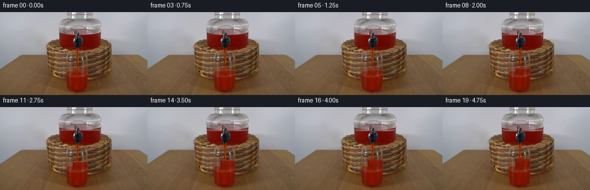
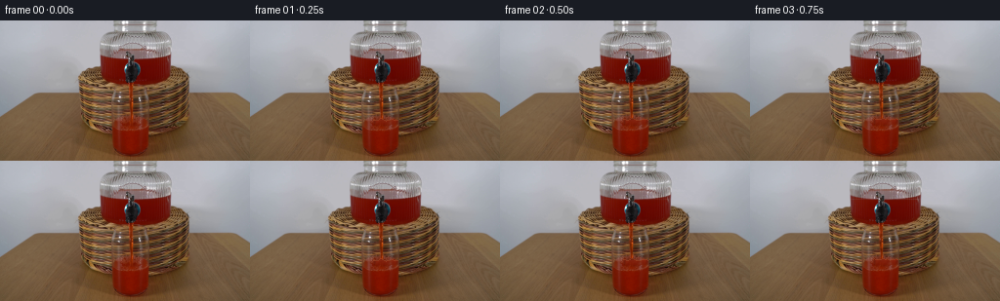
展开代码变化
--- 上一保存版本
+++ 本次保存版本
@@ -81,6 +81,26 @@
ys = np.arange(first, last + 1)
colors = liquid_color(ys, float(x), surface, t)
+ # Preserve the soft sidewall reflections that identify the glass.
+ original = source[ys, x].astype(np.float32)
+ luma = source[ys, x].mean(axis=-1)
+ local_luma = np.array(
+ [
+ source[y, max(118, x - 3) : min(160, x + 4)].mean()
+ for y in ys
+ ]
+ )
+ reflection = np.clip((luma - local_luma) / 55.0, 0.0, 1.0)
+ if x < 131:
+ reflection *= np.clip((131 - x) / 4.0, 0.0, 1.0)
+ elif x > 146:
+ reflection *= np.clip((x - 146) / 4.0, 0.0, 1.0)
+ else:
+ reflection *= 0.0
+ colors = colors * (1.0 - 0.58 * reflection[:, None]) + original * (
+ 0.58 * reflection[:, None]
+ )
+
edge = min(x - 126, 151 - x)
if edge == 0:
alpha = 0.64
@@ -88,7 +108,7 @@
alpha = 0.90
else:
alpha = 1.0
- blend_to_source = np.clip((ys - 103.0) / 3.0, 0.0, 1.0) * 0.38
+ blend_to_source = np.clip((ys - 103.0) / 3.0, 0.0, 1.0) * 0.45
alpha_by_row = alpha * (1.0 - blend_to_source)
old = frame[ys, x].astype(np.float32)
frame[ys, x] = np.clip(
@@ -127,27 +147,32 @@
def lower_dispenser_level(frame, source, drop, t):
"""Turn the narrow band above the falling surface into clear headspace."""
- if drop < 0.18:
+ if drop < 0.05:
return
- y0, y1 = 39, int(np.floor(39 + drop))
- if y1 < y0:
- return
- ys, xs = np.mgrid[y0 : y1 + 1, 103:174]
+ y0 = 39
+ ys, xs = np.mgrid[y0:45, 103:174]
red = (
(source[ys, xs, 0] > 60)
& (source[ys, xs, 0] > source[ys, xs, 1] * 1.55)
& (source[ys, xs, 0] > source[ys, xs, 2] * 1.55)
)
+ coverage = np.clip(drop - (ys - y0), 0.0, 1.0)
headspace = source[np.clip(ys - 4, 30, 38), xs].astype(np.float32)
- headspace = headspace * 0.88 + np.array([18.0, 14.0, 10.0])
+ headspace = headspace * 0.91 + np.array([13.0, 10.0, 7.0])
old = frame[ys, xs].astype(np.float32)
+ coverage = coverage * red
frame[ys, xs] = np.where(
- red[..., None],
- np.clip(old * 0.20 + headspace * 0.80, 0, 255),
+ coverage[..., None] > 0,
+ np.clip(
+ old * (1.0 - 0.84 * coverage[..., None])
+ + headspace * (0.84 * coverage[..., None]),
+ 0,
+ 255,
+ ),
old,
).astype(np.uint8)
- surface_y = y1
+ surface_y = min(44, int(np.floor(y0 + drop)))
row = frame[surface_y, 104:173].astype(np.float32)
ripple = 0.035 * np.sin(np.arange(69) * 0.62 - t * 4.5)
row *= (1.0 + ripple[:, None])
@@ -168,7 +193,7 @@
fill_glass(frame, source, surface, t)
animate_stream(frame, source, surface, t)
- tank_drop = 3.8 * eased
+ tank_drop = 3.2 * eased
lower_dispenser_level(frame, source, tank_drop, t)
frames[index] = frame
候选 03播放与检查图
点击播放 · 原生 RGB 像素

展开代码变化
--- 上一保存版本
+++ 本次保存版本
@@ -1,4 +1,5 @@
from pathlib import Path
+import subprocess
import numpy as np
from PIL import Image
@@ -198,6 +199,41 @@
frames[index] = frame
artifact_io.save(frames, CASE_DIR)
+ try:
+ import imageio_ffmpeg
+
+ subprocess.run(
+ [
+ imageio_ffmpeg.get_ffmpeg_exe(),
+ "-y",
+ "-hide_banner",
+ "-loglevel",
+ "error",
+ "-framerate",
+ str(FPS),
+ "-start_number",
+ "0",
+ "-i",
+ str(CASE_DIR / "frames" / "%02d.png"),
+ "-frames:v",
+ str(FRAMES),
+ "-c:v",
+ "libx264",
+ "-preset",
+ "slow",
+ "-crf",
+ "12",
+ "-pix_fmt",
+ "yuv420p",
+ "-movflags",
+ "+faststart",
+ str(CASE_DIR / "output.mp4"),
+ ],
+ check=True,
+ )
+ except (ImportError, OSError, subprocess.CalledProcessError):
+ # The canonical artifacts above remain complete without a convenience MP4.
+ pass
return frames
可观测工具轨迹
实际执行的命令与返回图片。
命令 1exit 0
/bin/bash -c "pwd && rg --files -g '"'!*.mp4'"' -g '"'!*.mov'"' -g '"'!*.webm'"' | sed -n '1,200p'"
命令 2exit 0
/bin/bash -c "sed -n '1,240p' prompt.txt"
命令 3exit 0
/bin/bash -c "sed -n '1,320p' GENERATION_RULES.md"
命令 4exit 0
/bin/bash -c "find . -maxdepth 3 -type f -printf '%p\\t%k KB\\n' | sort | sed -n '1,240p'"
命令 5exit 0
/bin/bash -c "sed -n '1,260p' artifact_io.py"
命令 6exit 0
/bin/bash -c "sed -n '1,260p' player_template.html"
命令 7exit 0
/bin/bash -c "python - <<'PY'
from PIL import Image
im=Image.open('first_frame.png')
print(im.mode, im.size)
print(im.getpixel((0,0)), im.getpixel((128,72)), im.getpixel((255,143)))
PY"命令 8exit 0
/bin/bash -c "python - <<'PY'
from PIL import Image
im=Image.open('first_frame.png')
im.crop((95,15,180,144)).resize((510,774), Image.Resampling.NEAREST).save('.tmp/crop.png')
PY"命令 9exit 0
/bin/bash -c "python - <<'PY'
from PIL import Image
im=Image.open('first_frame.png')
im.crop((110,60,165,144)).resize((550,840), Image.Resampling.NEAREST).save('.tmp/glass.png')
PY"命令 10exit 0
/bin/bash -c "python - <<'PY'
from PIL import Image
import numpy as np
im=np.array(Image.open('first_frame.png')).astype(int)
# red dominance masks in central region
r,g,b=im[:,:,0],im[:,:,1],im[:,:,2]
mask=(r>70)&(r>g*1.35)&(r>b*1.4)
for y in range(25,143,5):
xs=np.where(mask[y,95:180])[0]+95
if len(xs): print(y, xs.min(), xs.max(), len(xs))
PY"命令 11exit 0
/bin/bash -c "python - <<'PY'
from PIL import Image
im=Image.open('first_frame.png')
for i,(box,scale) in enumerate([((90,20,185,78),4),((118,55,157,143),4),((100,0,185,55),5)]):
im.crop(box).resize(((box[2]-box[0])*scale,(box[3]-box[1])*scale),Image.Resampling.NEAREST).save(f'.tmp/detail{i}.png')
PY"命令 12exit 0
/bin/bash -c "python - <<'PY' for m in ['numpy','PIL','scipy','cv2']: try: mod=__import__(m); print(m, getattr(mod,'__version__','ok')) except Exception as e: print(m, 'NO', e) PY"
命令 13exit 0
/bin/bash -c "python - <<'PY'
from PIL import Image
import numpy as np
im=np.array(Image.open('first_frame.png'))
# print crop as color stats per row inside glass x125..151
for y in range(82,143,3):
row=im[y,124:153]
print(y, 'mean', row.mean(0).astype(int), 'rmean', row[:,0].mean().astype(int), 'range', row.min(0).astype(int), row.max(0).astype(int))
PY"命令 14exit 0
/bin/bash -c "python - <<'PY'
from PIL import Image
import numpy as np
im=np.array(Image.open('first_frame.png'))
# map red/white/gray/brown categories for glass crop
for y in range(75,144):
s=''
for x in range(115,165):
r,g,b=im[y,x]
if r>65 and r>g*1.45 and r>b*1.5: c='R'
elif r>130 and g>90 and b<80: c='r'
elif r>170 and g>170 and b>170: c='W'
elif abs(int(r)-int(g))<15 and abs(int(g)-int(b))<20 and r>70: c='g'
elif r>70 and g>45: c='b'
else: c='.'
s+=c
print(f'{y:03d} {s}')
PY"命令 15exit 0
/bin/bash -c "python - <<'PY'
from PIL import Image
import numpy as np
im=np.array(Image.open('first_frame.png'))
# exact 9x9-ish patch summaries around stream/glass at t0
for y in range(55,145,4):
print('\\ny',y)
for x in range(122,153,3):
print(f'{x}:{tuple(im[y,x])}', end=' ')
PY"命令 16exit 0
/bin/bash -c "python - <<'PY'
from PIL import Image
import numpy as np
im=np.array(Image.open('first_frame.png')).astype(float)
# candidate local background per glass column from nearby outside x=117-121 and x=153-157, y each
for y in range(80,143,5):
print(y, 'left', np.median(im[y,114:121],0).astype(int), 'right', np.median(im[y,153:161],0).astype(int))
PY"命令 17exit 0
/bin/bash -c "python - <<'PY'
from PIL import Image
import numpy as np
im=np.array(Image.open('first_frame.png'))
# inspect rows at surface boundary x=127..150
for y in range(96,111):
print(y, [(x,tuple(im[y,x])) for x in range(126,151,2)])
PY"命令 18exit 0
/bin/bash -c "python - <<'PY'
from PIL import Image
import numpy as np
im=np.array(Image.open('first_frame.png')).astype(float)
r,g,b=im[:,:,0],im[:,:,1],im[:,:,2]
red=(r>65)&(r>g*1.5)&(r>b*1.5)
# per row occupancy within glass x=127..150
for y in range(70,143):
xs=np.where(red[y,124:154])[0]+124
print(y, len(xs), (xs.min(),xs.max()) if len(xs) else None)
PY"命令 19exit 0
/bin/bash -c "python - <<'PY'
from PIL import Image
import numpy as np
im=np.array(Image.open('first_frame.png'))
for y in range(60,95):
print(y, [x for x in range(118,160) if (lambda p:p[0]>60 and p[0]>p[1]*1.8 and p[0]>p[2]*1.8)(im[y,x])])
PY"命令 20exit 0
/bin/bash -c "python - <<'PY'
from PIL import Image
im=Image.open('first_frame.png')
box=(112,60,165,144)
im.crop(box).resize(((box[2]-box[0])*10,(box[3]-box[1])*10),Image.Resampling.BICUBIC).save('.tmp/glass_bicubic.png')
PY"命令 21exit 0
/bin/bash -c "python - <<'PY'
from PIL import Image
import numpy as np
im=np.array(Image.open('first_frame.png')).astype(float)
for y in range(30,80):
r=im[y,95:180]
red=((r[:,0]>60)&(r[:,0]>r[:,1]*1.6)&(r[:,0]>r[:,2]*1.6))
xs=np.where(red)[0]+95
print(f'{y:03d}', len(xs), (xs.min(),xs.max()) if len(xs) else '-')
PY"命令 22exit 0
/bin/bash -c "python - <<'PY'
from PIL import Image
im=Image.open('first_frame.png')
box=(95,0,185,75)
im.crop(box).resize(((box[2]-box[0])*8,(box[3]-box[1])*8),Image.Resampling.NEAREST).save('.tmp/tank.png')
PY"命令 23exit 0
/bin/bash -c "python - <<'PY'
from PIL import Image
import numpy as np
im=np.array(Image.open('first_frame.png')).astype(float)
# per row mean RGB tank liquid x=106..170 excluding center stream
for y in range(35,69):
row=im[y,108:170]
m=row.mean(0).astype(int)
print(y, tuple(m))
PY"命令 24exit 0
/bin/bash -c "python - <<'PY'
from PIL import Image, ImageDraw
im=Image.open('first_frame.png').crop((112,70,162,144)).resize((500,740),Image.Resampling.NEAREST)
d=ImageDraw.Draw(im)
for y in range(70,144,5):
yy=(y-70)*10
d.line((0,yy,500,yy), fill=(0,255,0), width=1)
d.text((2,yy+1),str(y),fill=(0,255,0))
im.save('.tmp/glass_grid.png')
PY"命令 25exit 0
/bin/bash -c "python - <<'PY'
from PIL import Image
import numpy as np
im=np.array(Image.open('first_frame.png')).astype(int)
for y in range(90,114):
print('\\ny',y)
for x in range(120,158):
r,g,b=im[y,x]
if r>50 and r>g*1.4 and r>b*1.4:
print(x, f'{r},{g},{b}', end='; ')
PY"命令 26exit 0
/bin/bash -c 'python generate.py'
命令 27exit 0
/bin/bash -c "python - <<'PY'
from PIL import Image
frames=[0,4,8,12,16,19]
box=(112,68,162,144)
out=Image.new('RGB',(len(frames)*500,760))
for i,f in enumerate(frames):
im=Image.open(f'frames/{f:02d}.png').crop(box).resize((500,760),Image.Resampling.NEAREST)
out.paste(im,(i*500,0))
out.save('.tmp/glass_sequence.png')
PY"命令 28exit 0
/bin/bash -c "python - <<'PY'
from PIL import Image
import numpy as np
for i in [0,1,4,8,12,16,19]:
im=np.array(Image.open(f'frames/{i:02d}.png'))
print(i, 'row98 x128-150', [tuple(v) for v in im[98,128:151:3]], 'row88', [tuple(v) for v in im[88,128:151:3]])
PY"命令 29exit 0
/bin/bash -c "python - <<'PY'
from PIL import Image
import numpy as np
for i in [0,1,8,19]:
im=np.array(Image.open(f'frames/{i:02d}.png')).astype(int)
print('frame',i)
for y in range(35,46):
print(y, tuple(im[y,108:169].mean(0).astype(int)), tuple(im[y,140]))
PY"命令 30exit 0
/bin/bash -c "python - <<'PY'
from PIL import Image
im=Image.open('frames/19.png')
box=(112,66,162,144)
im.crop(box).resize(((box[2]-box[0])*10,(box[3]-box[1])*10),Image.Resampling.BICUBIC).save('.tmp/final_glass.png')
PY"命令 31exit 0
/bin/bash -c 'python generate.py'
命令 32exit 0
/bin/bash -c "python - <<'PY'
from PIL import Image
import numpy as np
src=np.array(Image.open('first_frame.png'))
for f in [1,2,3,4,8,12,16,19]:
im=np.array(Image.open(f'frames/{f:02d}.png'))
d=np.abs(im.astype(int)-src.astype(int))
print(f, 'changed', int((d.max(2)>0).sum()), 'sum', int(d.sum()), 'glassmax',int(d[70:143,120:158].max()),'tankmax',int(d[30:66,100:177].max()))
PY"命令 33exit 0
/bin/bash -c "python - <<'PY'
from PIL import Image
frames=[1,4,8,12,16,19]
box=(112,70,162,144)
out=Image.new('RGB',(len(frames)*500,740))
for i,f in enumerate(frames):
im=Image.open(f'frames/{f:02d}.png').crop(box).resize((500,740),Image.Resampling.NEAREST)
out.paste(im,(i*500,0))
out.save('.tmp/glass_sequence2.png')
PY"命令 34exit 0
/bin/bash -c "python - <<'PY'
from PIL import Image
import numpy as np
im=np.array(Image.open('first_frame.png')).astype(int)
# For each glass row and x, print likely glass edge/rim strength from source only
for y in range(72,118,2):
vals=[]
for x in range(120,158):
r,g,b=im[y,x]
# grayish / white or bright neutral glass
if (abs(r-g)<28 and abs(g-b)<38 and r>95) or (r>150 and g>120):
vals.append(x)
print(y, vals)
PY"命令 35exit 0
/bin/bash -c "python - <<'PY'
from PIL import Image
import numpy as np
im=np.array(Image.open('first_frame.png')).astype(int)
# dump RGB at left glass area x118-127 and right x142-153 across boundary
for y in [78,80,82,84,86,88,90,92,94,96,98,100,102]:
print('\\ny',y,'L',[(x,tuple(im[y,x])) for x in range(118,128)], 'R',[(x,tuple(im[y,x])) for x in range(143,154)])
PY"命令 36exit 0
/bin/bash -c "python - <<'PY'
from pathlib import Path
from PIL import Image
import numpy as np, json
src=np.array(Image.open('first_frame.png').convert('RGB'))
frames=[np.array(Image.open(f'frames/{i:02d}.png').convert('RGB')) for i in range(20)]
print('count',len(frames))
print('shapes', sorted(set(f.shape for f in frames)))
print('frame0_exact', np.array_equal(src,frames[0]))
print('fps_contract', 20/4)
print('outputs', sorted(p.name for p in Path('.').iterdir() if p.is_file()))
z=np.load('pixels.npz')['pixels']
print('pixels', z.shape, z.dtype)
print('frames_dir', len(list(Path('frames').glob('*.png'))))
print('index_html', Path('index.html').stat().st_size)
# Detect top of contiguous warm liquid in central glass for each frame.
for i,f in enumerate(frames):
r,g,b=f[:,:,0],f[:,:,1],f[:,:,2]
mask=(r>78)&(r>g*1.65)&(r>b*1.8)
counts=[]
for y in range(74,108):
counts.append(int(mask[y,128:150].sum()))
print(i, counts)
PY"命令 37exit 0
/bin/bash -c "ffmpeg -version | sed -n '1,3p'"
命令 38exit 0
/bin/bash -c "python - <<'PY' mods=['imageio','imageio_ffmpeg','av','moviepy','cv2'] for m in mods: try: x=__import__(m); print(m, getattr(x,'__version__','ok')) except Exception as e: print(m, 'NO', type(e).__name__) PY which chromium || which chromium-browser || which google-chrome || which playwright || true node --version 2>/dev/null || true"
命令 39exit 0
/bin/bash -c "python - <<'PY'
import av, imageio_ffmpeg
print('av ok', av.__version__)
print('ffmpeg exe', imageio_ffmpeg.get_ffmpeg_exe())
PY"命令 40exit 0
/bin/bash -c "sed -n '1,260p' generate.py"
命令 41exit 0
/bin/bash -c 'FFMPEG=$(python -c '"'import imageio_ffmpeg; print(imageio_ffmpeg.get_ffmpeg_exe())')
\""'$FFMPEG" -y -hide_banner -loglevel error -framerate 4 -start_number 0 -i frames/%02d.png -frames:v 20 -c:v libx264 -preset slow -crf 12 -pix_fmt yuv420p -movflags +faststart output.mp4
ls -lh output.mp4
python - <<'"'PY'
import av
c=av.open('output.mp4')
s=c.streams.video[0]
frames=sum(1 for _ in c.decode(video=0))
print('mp4', s.width, s.height, float(s.average_rate), frames, float(s.duration*s.time_base) if s.duration else None)
PY"命令 42exit 0
/bin/bash -c "python - <<'PY'
import av, numpy as np
c=av.open('output.mp4')
d=[]
for i,frame in enumerate(c.decode(video=0)):
a=frame.to_ndarray(format='rgb24')
d.append(a)
print('decoded',len(d), d[0].shape, d[0].dtype)
# compression is lossy, so report error only to verify decoded image integrity.
print('mean_abs_error', float(np.mean([np.abs(x.astype(float)-np.array(__import__('PIL.Image').Image.open(f'frames/{i:02d}.png')).mean()) for i,x in enumerate(d)])))
PY
python -m py_compile generate.py
sha256sum first_frame.png frames/00.png
"命令 43exit 0
/bin/bash -c "python - <<'PY'
import av, numpy as np
from PIL import Image
c=av.open('output.mp4')
errors=[]
for i,frame in enumerate(c.decode(video=0)):
a=frame.to_ndarray(format='rgb24').astype(float)
b=np.array(Image.open(f'frames/{i:02d}.png')).astype(float)
errors.append(np.mean(np.abs(a-b)))
print('decoded_frames',len(errors))
print('mean_abs_error',round(float(np.mean(errors)),3))
print('max_mean_abs_error',round(float(np.max(errors)),3))
PY"命令 44exit 0
/bin/bash -c "ls -lah | sed -n '1,120p' find . -maxdepth 2 -type f -printf '%p\\n' | sort | tail -40"
命令 45exit 0
/bin/bash -c "python generate.py && python - <<'PY'
from pathlib import Path
from PIL import Image
import numpy as np, av
src=np.array(Image.open('first_frame.png').convert('RGB'))
frames=[np.array(Image.open(f'frames/{i:02d}.png').convert('RGB')) for i in range(20)]
assert len(frames)==20
assert all(f.shape==(144,256,3) and f.dtype==np.uint8 for f in frames)
assert np.array_equal(src,frames[0])
assert np.load('pixels.npz')['pixels'].shape==(144,256,20)
c=av.open('output.mp4')
s=c.streams.video[0]
n=sum(1 for _ in c.decode(video=0))
assert (s.width,s.height,float(s.average_rate),n)==(256,144,4.0,20)
print('PASS: 20 RGB frames, 256x144, 4 fps, 5.0 s, frame 0 exact')
print('artifacts:', ', '.join(p.name for p in [Path('generate.py'),Path('pixels.npz'),Path('frames'),Path('index.html'),Path('output.mp4')]))
PY"视觉工具实际返回图片 1
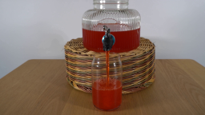
视觉工具实际返回图片 2
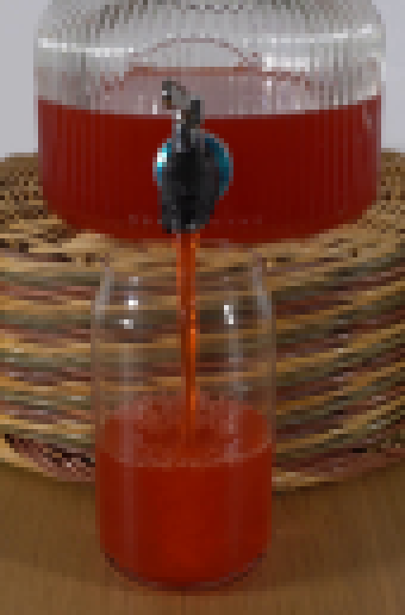
视觉工具实际返回图片 3
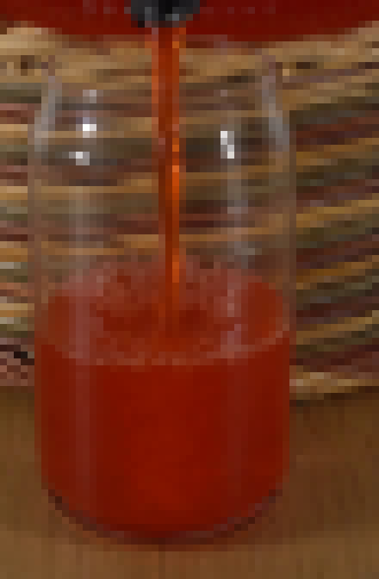
视觉工具实际返回图片 4
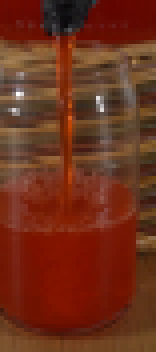
视觉工具实际返回图片 5
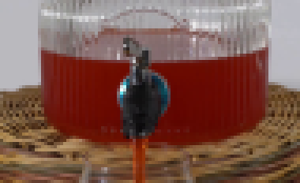
视觉工具实际返回图片 6
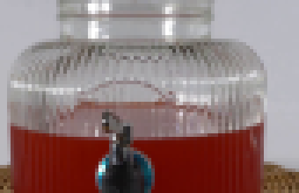
视觉工具实际返回图片 7
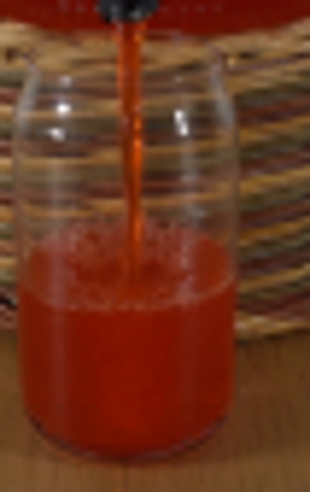
视觉工具实际返回图片 8
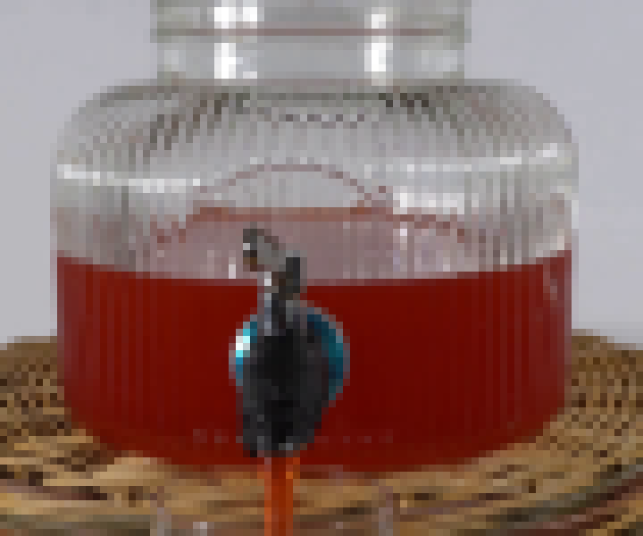
视觉工具实际返回图片 9
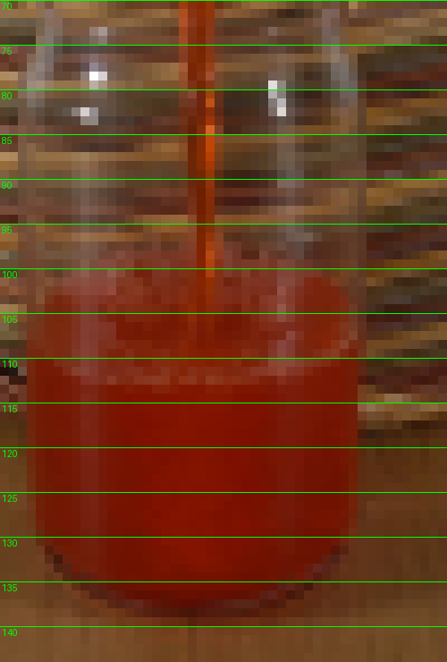
视觉工具实际返回图片 10

视觉工具实际返回图片 11
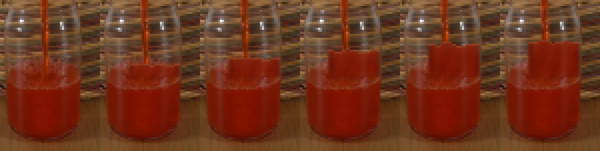
视觉工具实际返回图片 12
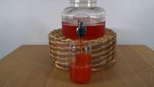
视觉工具实际返回图片 13
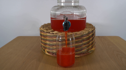
视觉工具实际返回图片 14
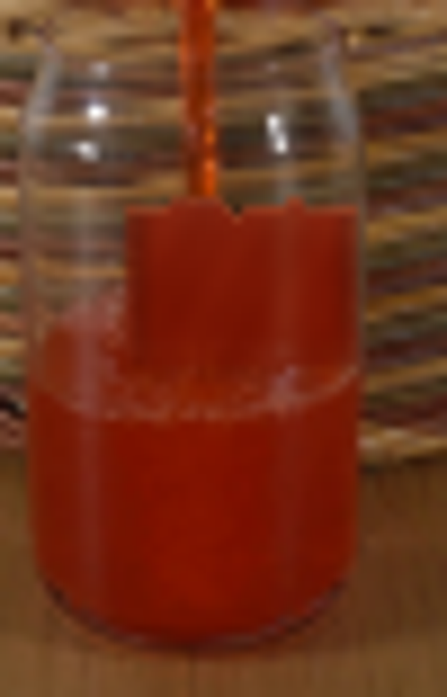
视觉工具实际返回图片 15

视觉工具实际返回图片 16
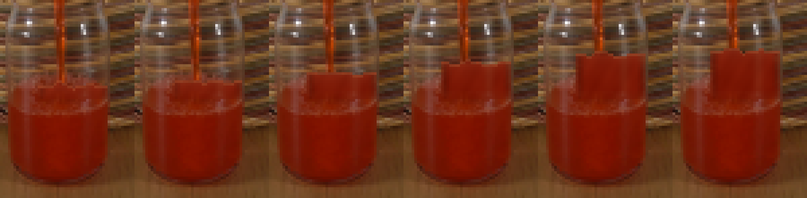
视觉工具实际返回图片 17
保存候选 3 份；完成命令 45 次；可验证图片返回 17 张。原始 API 响应与完整日志保留在本地。